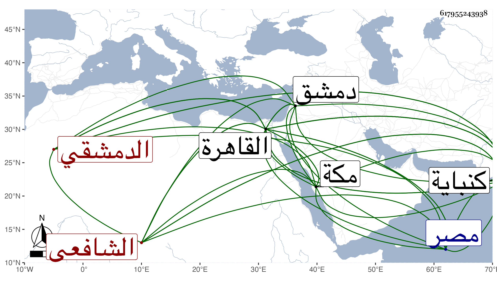

0902Sakhawi.DawLamic.ITO20230111-ara1.EIS1600.617955243938
Biography ID: 617955243938
244
عمر بن أحمد بن محمد بن محمد الدمشقي الشافعي نزيل كنباية ويعرف بالبطايني . ولد في سنة تسع وعشرين وثمانمائة بدمشق ونشأ بها وصحب الخيضري قبل ترقيه ودخل معه القاهرة ثم دخل كهنباية في سنة سبع وخمسين للتجارة وامتحن محنا اقتضت له الدخول في الديوان وآل أمره إلى أن ولي قاضيا على مذهب الشافعي سوى قاضيهم الحنفي وذلك في سنة تسع وستين واستمر إلى أن دخل مكة في غروب يوم الصعود من سنة ست وثمانين سفيرا من صاحبها بهدية لصاحب مصر ولقيني هناك فسمع علي أشياء من تصانيفي وغيرها ، وأقام هناك سنة ثم دخل القاهرة بالهدية المشار إليها وسمع مني أيضا وأقام قليلا ثم رجع بعد أن كتبت له إجازة تعرضت لشيء منها في التاريخ الكبير وبالغ في الاغتباط والارتباط وأنه لولا التوصل بصاحبه لمقاصد لا نحل عنه لعدم تأهله إلى غير ذلك وبلغنا انحلال صاحب كنباية بعد رجوعه عنه بإغزاء رفيقه في السفارة المشار إليها ثم تراجع أمره معه وصاهر حافظ عبيد ومشى الحال ، وكان قد سمع بقراءتي بالقاهرة في شوال سنة ثلاث وخمسين على سارة ابنة ابن جماعة بعض المعجم الكبير للطبراني ولقبته هناك زين الدين وقلت سبط البطايني .
